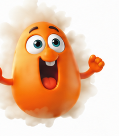
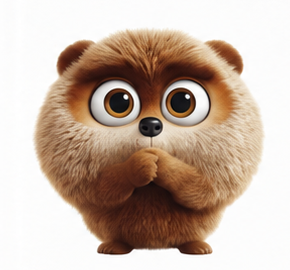
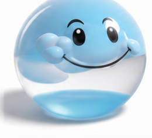

From the book · Stop Wasting Time With AI
What type of
AI user are you?
Learning AI isn't a ladder. It's a maze — and there are four ways people get stuck in it.



7 questions. 60 seconds.
Be honest — the pattern is invisible from the inside.
You found the center of the maze
This week, you are
Your gift
Its shadow
The move that gets you out
Most of us are a blend, and the answer changes week to week. The question underneath: what happens to your strength under pressure?
The Maze is one chapter of Stop Wasting Time With AI.
A practical, emotionally intelligent method for using AI well — by Zena Collins.